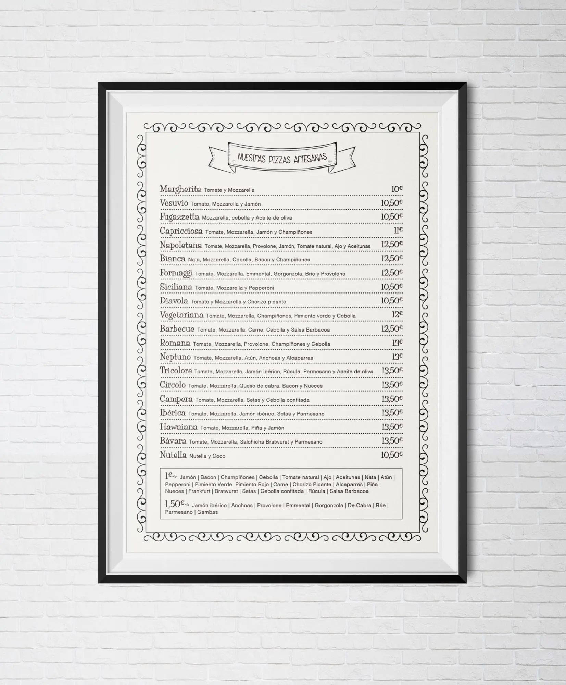
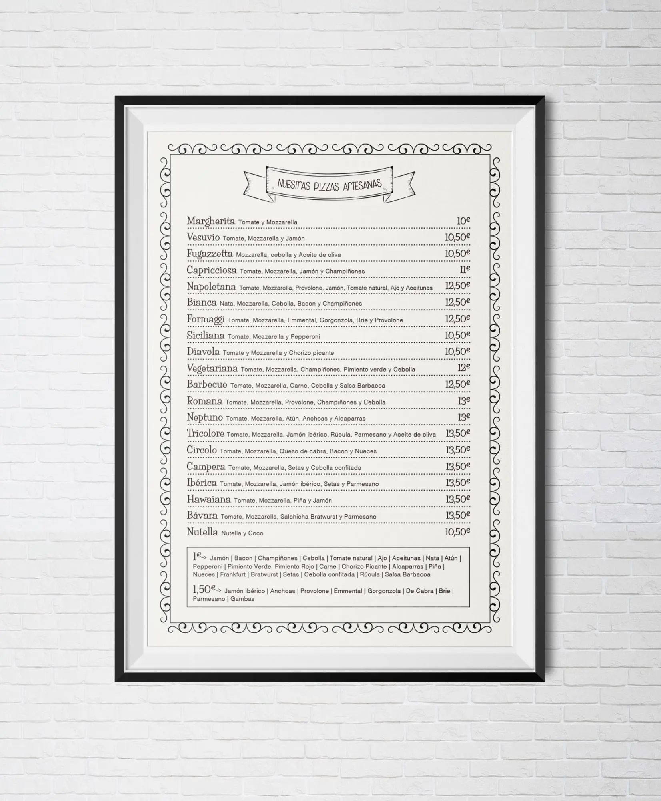

Circolo pizza
Circolo es una pequeña pizzería take away en el centro de Bilbao. Sus dueños, unos grandes forofos del Athletic de Bilbao, me contactaron para crear su carta de riquísimas pizzas y como no: una ilustración de un león comiéndose una de ellas. Me dejaron libertad creativa total, así que hice estilísticamente hice lo que me apeteció. Únicamente mantuve los colores que caractyerizaban a esta pizzería, el blanco y el negro.
 
